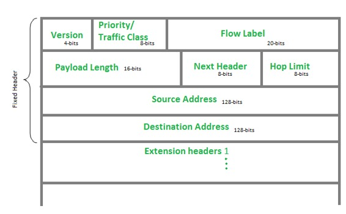
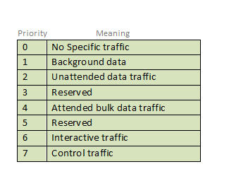
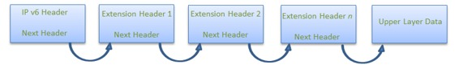
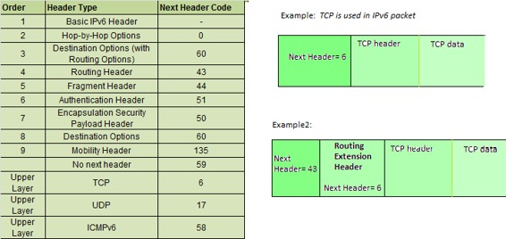
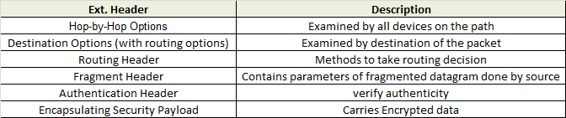

Prerequisite: Introduction to Internet Protocol version 6
IP version 6 is the new version of Internet Protocol, which is way better than IP version 4 in terms of complexity and efficiency. Let’s look at the header of IP version 6 and understand how it is different from IPv4 header.
IP version 6 Header Format :

Version (4-bits) : Indicates version of Internet Protocol which contains bit sequence 0110.
Traffic Class (8-bits) : The Traffic Class field indicates class or priority of IPv6 packet which is similar to Service Field in IPv4 packet. It helps routers to handle the traffic based on priority of the packet. If congestion occurs on router then packets with least priority will be discarded.
As of now only 4-bits are being used (and remaining bits are under research), in which 0 to 7 are assigned to Congestion controlled traffic and 8 to 15 are assigned to Uncontrolled traffic.
Priority assignment of Congestion controlled traffic :

Uncontrolled data traffic is mainly used for Audio/Video data. So we give higher priority to Uncontrolled data traffic.
Source node is allowed to set the priorities but on the way routers can change it. Therefore, destination should not expect same priority which was set by source node.
Flow Label (20-bits) : Flow Label field is used by source to label the packets belonging to the same flow in order to request special handling by intermediate IPv6 routers, such as non-default quality of service or real time service. In order to distinguish the flow, intermediate router can use source address, destination address and flow label of the packets. Between a source and destination multiple flows may exist because many processes might be running at the same time. Routers or Host that do not support the functionality of flow label field and for default router handling, flow label field is set to 0. While setting up the flow label, source is also supposed to specify the lifetime of flow.
Payload Length (16-bits) : It is a 16-bit (unsigned integer) field, indicates total size of the payload which tells routers about amount of information a particular packet contains in its payload. Payload Length field includes extension headers(if any) and upper layer packet. In case length of payload is greater than 65,535 bytes (payload up to 65,535 bytes can be indicated with 16-bits), then the payload length field will be set to 0 and jumbo payload option is used in the Hop-by-Hop options extension header.
Next Header (8-bits) : Next Header indicates type of extension header(if present) immediately following the IPv6 header. Whereas In some cases it indicates the protocols contained within upper-layer packet, such as TCP, UDP.
Hop Limit (8-bits) : Hop Limit field is same as TTL in IPv4 packets. It indicates the maximum number of intermediate nodes IPv6 packet is allowed to travel. Its value gets decremented by one, by each node that forwards the packet and packet is discarded if value decrements to 0. This is used to discard the packets that are stuck in infinite loop because of some routing error.
Source Address (128-bits) : Source Address is 128-bit IPv6 address of the original source of the packet.
Destination Address (128-bits) : Destination Address field indicates the IPv6 address of the final destination(in most cases). All the intermediate nodes can use this information in order to correctly route the packet.
Extension Headers : In order to rectify the limitations of IPv4 Option Field, Extension Headers are introduced in IPversion 6. The extension header mechanism is very important part of the IPv6 architecture. Next Header field of IPv6 fixed header points to the first Extension Header and this first extension header points to the second extension header and so on.

IPv6 packet may contain zero, one or more extension headers but these should be present in their recommended order:

Rule : Hop-by-Hop option header(if present) should always be placed after IPv6 base header.
Conventions :
- Any extension header can appear at most once except Destination Header because Destination Header is present two times in above list itself.
- If Destination Header is present before Routing Header then it will be examined by all intermediate nodes specified in routing header.
- If Destination Header is present just above Upper layer then it will be examined only by Destination node.
Given order in which all extension header should be chained in IPv6 packet and working of each extension header :

References:
https://www.ietf.org/rfc/rfc2460.txt
https://www.ietf.org/rfc/rfc3697.txt
https://www.cisco.com/en/US/technologies/tk648/tk872/technologies_white_paper0900aecd8054d37d.html